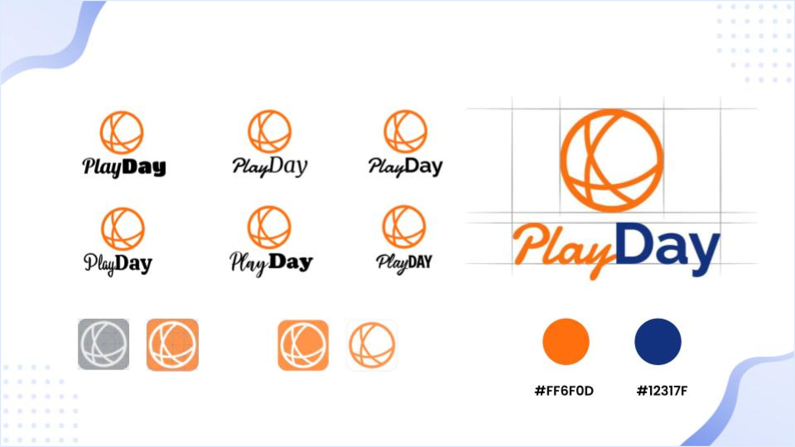

About PlayDay
PlayDay is a mobile app for the players who are looking for courts near them to play. Through PlayDay you can also challenge other palyer and have a match with a single click.
Project information
Duration:
13 weeks
My role:
Project Manager & UX Designer
Team size:
3 Developers & 2 Designers
Platform:
Mobile Application
The Problem
People need a way to find clubs and courts to play their favorite sport, and connect with like-minded players living nearby. Operations Sports reinforces the need of connecting team players by their levels.” It is pointed out the need to give time to these new players to evolve their skills."
The Solution
An app that will allow users to find available courts and clubs related to particular sports nearby as well as connect users with the active players through the messaging functionality. PlayDay app will connect players based on their favourite sports and levels.
Project Deliverables
My Role
Competitors
Tools
Secondary Research
We started our research with local magazines and online articles. “Operations Sports reinforces the need of connecting team players by their levels.” It is pointed out the need to give time to these new players to evolve their skills."
Open Ended Interviews
In total we did 6 open ended interviews with our targeted audience to learn if they are actually struggling with finding courts or players to play with. We also recorded our interviews so that we do not miss anything important.
The Features
Select Level
Easy to navigate the courts through the maps and see a nearest location to play

Discover Courts
Adjust your search results by selecting the number of players and distance filters
Meet New Players
Users can chat through an app to meet and play together
Challenge Players
Challenge another player to receive a discount on court rental
User Flow
Wirefames
High Fidelity Screens
Logo Desing
For the logo, we have chosen a circle that resembles a ball since most sports that are played on the court involve balls. Vivid orange and dark blue colors represent energy and active lifestyle.
Design Process
The design process consisted of four stages: wireframes, low-fidelity, high-fidelity, user testing, iterating the designs and the final design.

Project Charter
I have planned the project charter for this project so that developers and designers will know the deadlines for their deliverables. All of the team members reviewed the project charter and we made some changes to make sure there is enough time for each sprint.
Project Managment
For this project we also tried using a more advanced tool called Wrike. As our team was not very big this tool turned out too complicated and detailed, for this project we understood that we needed a more simple tool, so we tried Trello and Asana.
Functional Prototype
Did you enjoy this project?
I would love to hear from you!